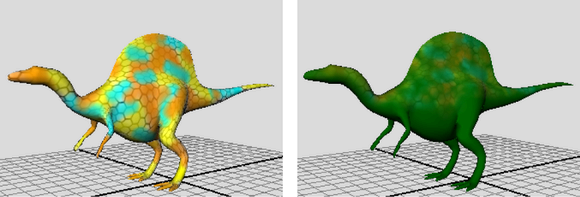

通过有计划地保存纹理，在纹理上进行绘制，然后向后擦除以显示基础笔划，您可以创建有趣的分层效果。

- 确保“每一笔划后更新”(Update on Stroke)（位于“3D 绘制工具”(3D Paint Tool)设置编辑器的“文件纹理”(File Textures)区域中）处于禁用状态。启用该选项将在每个绘制笔划后保存纹理。
- 绘制一个基础纹理（或将一个现有文件纹理映射到曲面），然后单击“保存纹理”(Save Textures)。
- 在“整体应用”(Flood)区域中，选择一种“颜色”(Color)，确保使“整体应用”的“全部”(All)单选框处于启用状态，然后单击“整体应用绘制”(Flood Paint)以对曲面整体应用另一种颜色。
- 将“绘制操作”(Paint Operation)更改为“Artisan 擦除”(Artisan Erase)。
- 在“颜色”(Color)区域中，将“不透明度”(Opacity)更改为小于 1（或者，如果您有光笔和数字化仪，请使用压力敏感度。详情请参见下一步骤）。不透明度越低，进行擦除操作时移除的绘制就将越少。
- 在所需的区域上进行绘制，修改“不透明度”(Opacity)值（如果需要）以精细地向后擦除到第一个层。
默认情况下，使用带有光笔和数字化仪的 Artisan 笔刷进行绘制时，“不透明度”(Opacity)受施加到光笔的压力的影响，即按下去的压力越大，笔划就越不透明。有关详细信息，请参见设置光笔压力。
- 获得满意的效果后，单击“保存纹理”(Save Textures)。您可以通过重复这些步骤继续构建绘制层。